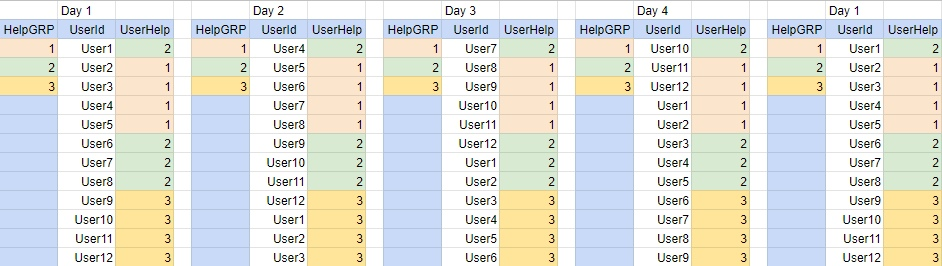

My Project
Aliexpress Group Buy (light mode)
Aliexpress Group Buy (full mode)
Telegram bot для впорядкування черги Спеціальних Пропозицій
Telegram bot AE Special Group
Google документ Special Group
Приблизний розподіл черги учасників по дням.

Циклічність можливості викупу СП для кожного учасника 1 раз на 4 дні.
HelpGRP - учасники які дають посилання на створену групу і викупають пропозицію (на 10 годину ранку повинна бути можливість створення СП і допомоги у СП!!!)
UserHelp - номер учасника кому допомагає користувач (на 10 годину ранку повинна бути можливість допомоги у СП!!!)
Алгоритм роботи:
При запуску бота, він додає Вас до основної черги користувачів. Якщо немає місця, він додасть Вас у чергу на розширення групи.
Кожного дня (вночі) черга зрушується на кількість HelpGRP учасників. (Тобто HelpGRP учасники переміщаються у кінець списку.)
Зранку HelpGRP учасники отримують повідомлення від бота, що сьогодні їхня черга. У відповідь боту необхідно надати посилання на сворену групу Спеціальних Пропозицій.
О 10:15 (не остаточний час) запускається обробка черги. Усі користувачі отримують повідомлення кому вони сьогодні допомагають.
Після того як Ви допомогли користувачу, необхідно надіслати боту скрін допомоги.
!!! Скрін у вигляді зображення (не файл)!!!